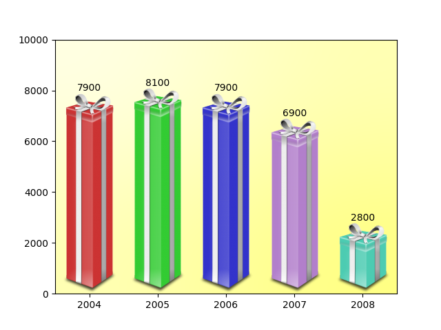

Note
Click here to download the full example code
Ribbon Box¶
import numpy as np
from matplotlib import cbook, colors as mcolors
from matplotlib.image import AxesImage
import matplotlib.pyplot as plt
from matplotlib.transforms import Bbox, TransformedBbox, BboxTransformTo
class RibbonBox:
original_image = plt.imread(
cbook.get_sample_data("Minduka_Present_Blue_Pack.png"))
cut_location = 70
b_and_h = original_image[:, :, 2:3]
color = original_image[:, :, 2:3] - original_image[:, :, 0:1]
alpha = original_image[:, :, 3:4]
nx = original_image.shape[1]
def __init__(self, color):
rgb = mcolors.to_rgba(color)[:3]
self.im = np.dstack(
[self.b_and_h - self.color * (1 - np.array(rgb)), self.alpha])
def get_stretched_image(self, stretch_factor):
stretch_factor = max(stretch_factor, 1)
ny, nx, nch = self.im.shape
ny2 = int(ny*stretch_factor)
return np.vstack(
[self.im[:self.cut_location],
np.broadcast_to(
self.im[self.cut_location], (ny2 - ny, nx, nch)),
self.im[self.cut_location:]])
class RibbonBoxImage(AxesImage):
zorder = 1
def __init__(self, ax, bbox, color, *, extent=(0, 1, 0, 1), **kwargs):
super().__init__(ax, extent=extent, **kwargs)
self._bbox = bbox
self._ribbonbox = RibbonBox(color)
self.set_transform(BboxTransformTo(bbox))
def draw(self, renderer, *args, **kwargs):
stretch_factor = self._bbox.height / self._bbox.width
ny = int(stretch_factor*self._ribbonbox.nx)
if self.get_array() is None or self.get_array().shape[0] != ny:
arr = self._ribbonbox.get_stretched_image(stretch_factor)
self.set_array(arr)
super().draw(renderer, *args, **kwargs)
def main():
fig, ax = plt.subplots()
years = np.arange(2004, 2009)
heights = [7900, 8100, 7900, 6900, 2800]
box_colors = [
(0.8, 0.2, 0.2),
(0.2, 0.8, 0.2),
(0.2, 0.2, 0.8),
(0.7, 0.5, 0.8),
(0.3, 0.8, 0.7),
]
for year, h, bc in zip(years, heights, box_colors):
bbox0 = Bbox.from_extents(year - 0.4, 0., year + 0.4, h)
bbox = TransformedBbox(bbox0, ax.transData)
ax.add_artist(RibbonBoxImage(ax, bbox, bc, interpolation="bicubic"))
ax.annotate(str(h), (year, h), va="bottom", ha="center")
ax.set_xlim(years[0] - 0.5, years[-1] + 0.5)
ax.set_ylim(0, 10000)
background_gradient = np.zeros((2, 2, 4))
background_gradient[:, :, :3] = [1, 1, 0]
background_gradient[:, :, 3] = [[0.1, 0.3], [0.3, 0.5]] # alpha channel
ax.imshow(background_gradient, interpolation="bicubic", zorder=0.1,
extent=(0, 1, 0, 1), transform=ax.transAxes, aspect="auto")
plt.show()
main()
Keywords: matplotlib code example, codex, python plot, pyplot Gallery generated by Sphinx-Gallery